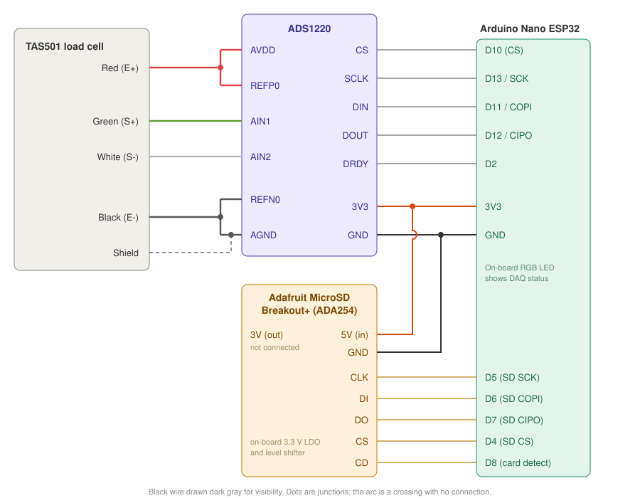

Rocket motor DAQ wiring
SparkFun 200 kg S-type load cell (TAS501, SEN-14282), ADS1220 24-bit ADC breakout, Arduino Nano ESP32 (ABX00083)
and Adafruit MicroSD Card Breakout Board+ (ADA254). Ratiometric load cell hookup, thrust logged to the SD card.

Power
- 3.3 V logic throughout. The Nano ESP32, ADS1220 and the ADA254 logic all run at 3.3 V. The ADA254 has its own level shifter and regulator, so it connects directly.
- SD card current. An SD card can draw 100 mA or more while writing. The Nano ESP32's 3V3 regulator can supply this, but keep the 3V3 and GND wires to the breakout short and solid.
- Field power. Power the Nano from a USB power bank or 6-21 V on VIN. The DAQ runs and records without a computer attached, and the on-board RGB LED shows its state.
- Excitation. The load cell bridge is powered from the 3V3 rail. A typical 350 ohm bridge draws about 10 mA at 3.3 V.
Status LED (Nano ESP32 on-board RGB)
| Color | Meaning |
|---|
| Blue | Not calibrated, or taring / calibrating (keep the stand still) |
| Green | Armed: calibrated, SD card mounted, waiting for thrust above 1 lbf |
| Red, solid | Recording a burn |
| Red, blinking | SD card missing or failed. Thrust is still measured and summarised on Serial, but not saved. |
ADS1220 register settings
| Setting | Value | Reason |
|---|
| Input mux | AIN1 (+) / AIN2 (-), MUX = 0011 | Matches the wiring above |
| Gain | 128, PGA enabled | The bridge signal is only millivolts |
| Reference | External REFP0/REFN0, VREF = 01 | Ratiometric: supply drift cancels out |
| Data rate | 1000 SPS, normal mode, continuous | Resolves the thrust curve of small and mid-size motors |
| 50/60 Hz filter | Off | It only works at 20 SPS |
Mechanical and wiring notes
- Thrust direction. The S-beam measures tension and compression. Calibrate by loading the cell in the same direction the motor pushes. The calibration keeps its sign, so thrust reads positive.
- Shield. Ground the shield at the ADS1220 end only, to avoid a ground loop.
- Capacity. 200 kg (about 441 lbf, 1961 N). The firmware warns if a burn's peak exceeds this.
- Use the D-names in code (D4, D10 and so on) so the pins are right in either Nano ESP32 pin-numbering mode.
Sources
TAS501 datasheet: https://www.mouser.com/datasheet/2/813/TAS501-1223873.pdf
Arduino Nano ESP32 datasheet (ABX00083): https://cdn.sparkfun.com/assets/a/4/b/6/8/ABX00083-datasheet.pdf
Arduino Nano ESP32 cheat sheet: https://docs.arduino.cc/tutorials/nano-esp32/cheat-sheet
Adafruit MicroSD Breakout Board+ (ADA254): https://www.adafruit.com/product/254
Adafruit MicroSD breakout tutorial: https://learn.adafruit.com/adafruit-micro-sd-breakout-board-card-tutorial